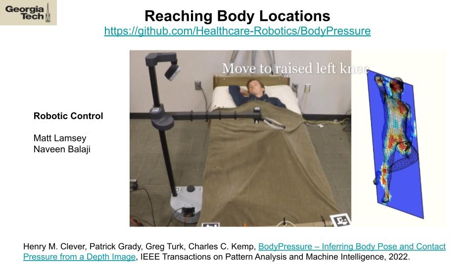

Research
What I work on
One thread runs through all of it: helping machines perceive the world reliably enough to act in it — from drones that navigate without GPS, to manipulators that assist people, to AI that reads medical images.
Current · Healthcare AI Lab, GT/Emory (2025–present)
Medical-image perception with deep learning · Dr. Anant Madabhushi
I build AI that looks at medical images — like photos of the retina — and predicts health risks, while making sure we can see why the model decided what it did.
- Developed deep-learning pipelines for medical-image classification, segmentation, interpretability, and cross-domain validation.
- Built foundation-model feature extraction and survival-modeling workflows for retinal fundus images to estimate time-to-event kidney risk.
- Created heatmap, attribution, and error-analysis workflows to inspect learned image signals and support model debugging.
- Designed reproducible evaluation pipelines across datasets, improving visibility into failure modes and generalization behavior.
DOMAIN retinal fundus imagingSTACK foundation models · survival analysisFOCUS interpretability & validation
3D perception · Georgia Tech (2024)
Semantic scene completion with 3D generative AI · Dr. Lu Gan
A robot's sensors only see part of a scene — the rest is hidden behind objects. I researched generative models that fill in the missing 3D structure so the robot can reason about what it can't see.
- Researched semantic scene completion for autonomous-robot perception using 3D generative AI models.
- Implemented conditional diffusion baselines with latent-space representations for 3D scene understanding on the KITTI dataset.
- Evaluated 3D perception performance for scene reasoning, occupancy understanding, and navigation-aware perception.
DATA KITTISTACK conditional diffusion · latent spacesUSE occupancy & navigation
Assistive robotics · Healthcare Robotics Lab (2021–2023)
Mobile manipulators for assistive tasks · Dr. Charlie Kemp
I taught robot arms on wheels to help people with everyday tasks — reaching toward the body, handing over objects like a cane — by letting human and robot learn to cooperate as two active partners.
- Developed simulation and data-generation pipelines for mobile-manipulator autonomy, supporting training and evaluation of robot learning policies for assistive tasks.
- Built embodied-AI workflows for grasping, handover, and human-centered interaction, connecting perception outputs with policy learning and task execution.
- Integrated multimodal perception — including pose detection in occluded regions — for robust human-aware robot behavior.
- Created reproducible reinforcement-learning experiment workflows: simulation setup, policy testing, and qualitative failure analysis.

PLATFORM Stretch · PR2STACK RL · PyBullet · pose estimationSTAGE sim → real, human trials
Object handover & human behavior modeling (sim2real)
The robot learns handover skills in a physics simulator with realistic virtual humans — people lying on beds, sitting in chairs — then carries those skills into the real world.
- Trained handover policies in PyBullet with moving, reactive humans, then transferred and validated them on a physical robot.
- Modeled humans on beds using the public SLP dataset and generated quasi-static sitting poses for safe assistive-task training.


DATA SLP datasetSTACK PyBullet · policy transferSTAGE sim2real validated
UAV autonomy · IIT Kanpur (2019–2021)
GPS-denied fail-safe localization for UAVs · Dr. Mangal Kothari, IGC Lab
Drones usually rely on GPS and a compass. Indoors and around steel structures, both fail — so I built backup systems that fuse inertial sensors with radio beacons to keep the drone confident about where it is.
- Developed Kalman-filter attitude and position estimators for indoor localization and autonomous navigation.
- Designed a GPS-denied fail-safe pose-estimation system combining inertial and range-based measurements, reducing localization failure cases by 50%.
- Built sensor-fusion algorithms combining IMU, BLE, and UWB signals, improving localization reliability by 30%.
- Validated performance through experimental testing and failure-case analysis across sensing conditions.
PLATFORM multirotor UAVsSTACK Kalman filters · IMU + BLE + UWBRESULT ICUAS 2020 paper + patent